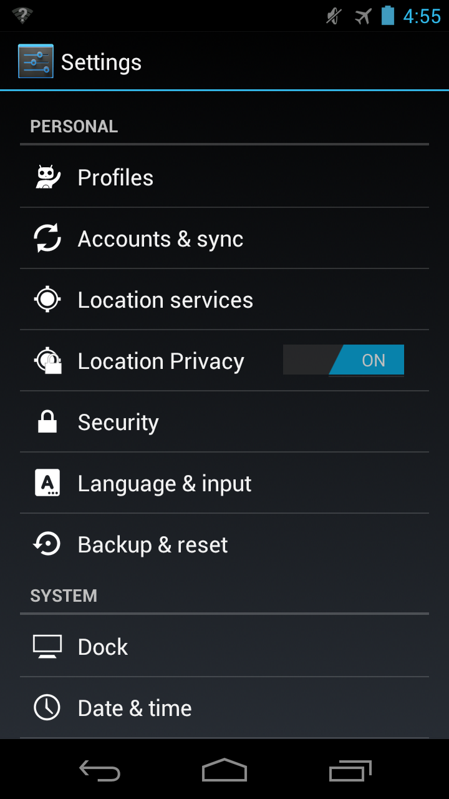
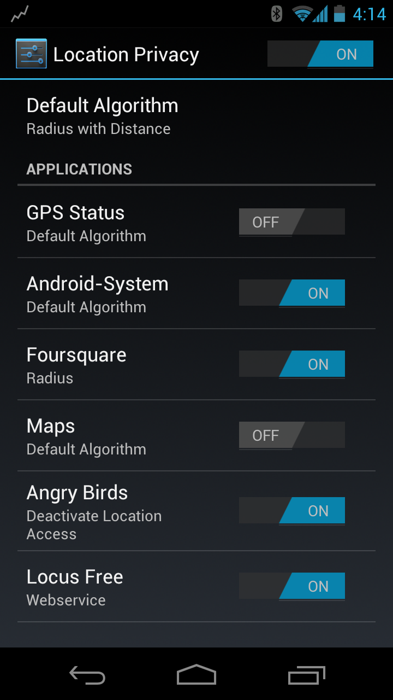
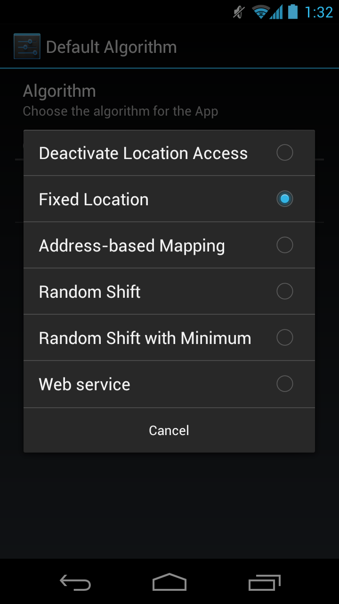
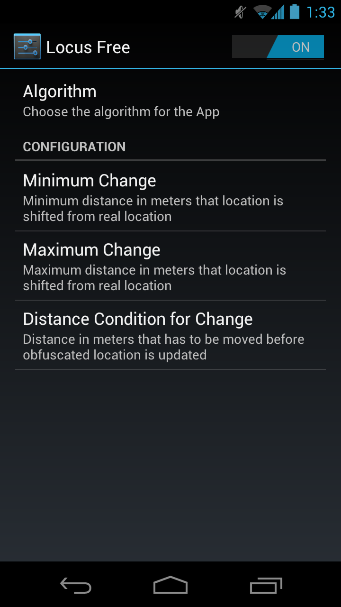

Android Location Privacy Framework
Location privacy settings of Android (at least up to 4.2 Jelly Bean) are limited to the option of disabling location use in general, while Apple iOS (since version 6) allows it on a per-app basis. When using location-based services, users always reveal their exact location even to apps that do not need it. Weather forecast apps as well as navigation apps get the most exact location a device can determine. Mobile privacy research focuses on the recognition and prevention of the disclosure of private data including location, but does not extend to privacy in use cases where users do want to disclose their location. The increasing use of smartphones today entails an increasing use of location-based services as well. Users want to use these services, but have privacy concerns. As many location-based services do not require exact locations, user privacy can be increased by only disclosing location in such detail as required for the respective service to function. The Android Location Privacy Framework enables users to restrict the accuracy of revealed location data. Having control of location exactness allows its users to achieve the best possible privacy enhancement based on personal requirements.
The framework can be used by moderately skilled users and is intended to build the base for future research concerning the usability of privacy-enhancing obfuscation algorithms and their parameters in real world mobile scenarios.
Framework features:
- The framework adds location obfuscation to Android's location capabilities.
- Users can select a default obfuscation algorithm for all apps.
- Users can select a different algorithm or configuration for each app.
- Researchers can add multiple algorithms to test and study them.
The base version of the Android Location Privacy Framework was implemented within the bachelor thesis of C. Kater at the Distributed Computing & Security Group, Leibniz Universität Hannover, Germany. The thesis has been advised by B. Henne.
Our Android extension has been tested with
- CyanogenMod 9.1 (code|patch)
- AOSP 4.0.4 (code|patch)
- Cyanogenmod 10.1 (code|patch)
- B. Henne, C. Kater, M. Brenner, M. Smith: Selective Cloaking: Need-to-know for Location-based Apps. In 2013 Eleventh Annual International Conference on Privacy, Security and Trust (PST), Tarragona, Spain, July 10-12 2013, IEEE, to appear.
Screenshots
These screenshots show how you configure location obfuscation using the framework.
   Publications
Support or Contact
Feel free to contact the corresponding person @bhenne at our Group.